Mid-century design has a specific kind of buyer appeal that most styles don't, it reads as both nostalgic and current at the same time.
That appeal is genuinely real, but it only holds up when the room gets the actual fundamentals right. This covers both halves.
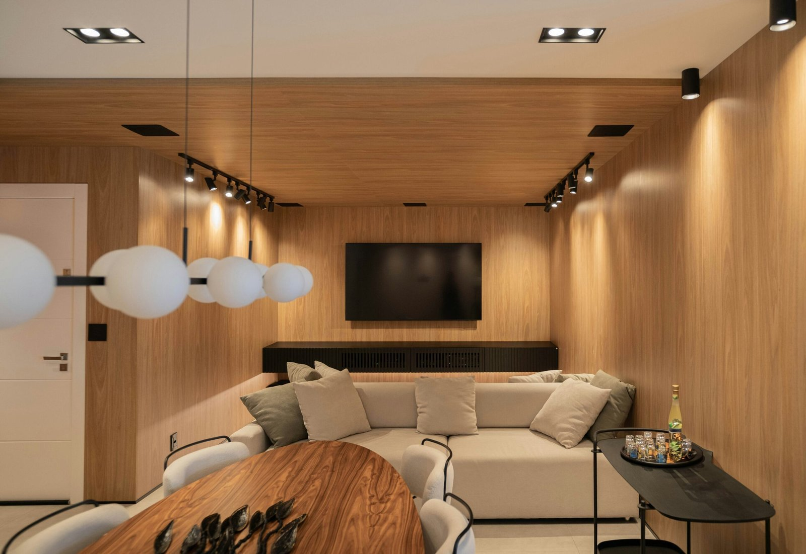


Blending Without Losing the Core Appeal
Mid-century pairs well with Scandinavian simplicity, a touch of boho warmth, subtle modern glam, or industrial edge, as long as the mid-century furniture fundamentals stay the visual anchor.
The appeal erodes quickly once the blend tips so far toward another style that the mid-century foundation stops being recognizable.

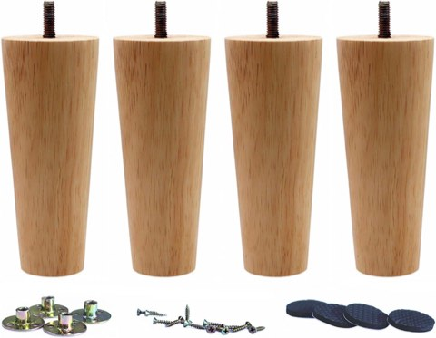
Solid Wood Replacement Furniture Sofa Legs, 6 Inch, Set of 4, Heavy Duty
Shop on Amazon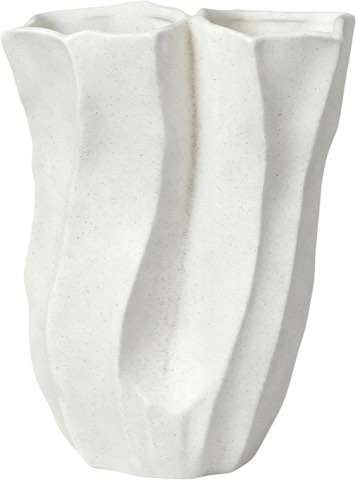
White Ceramic Vase, Organic Sculpted Shape, Rustic Decorative Centerpiece
Shop on Amazon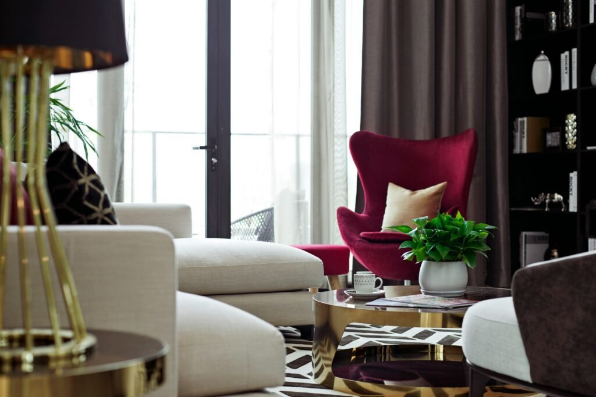
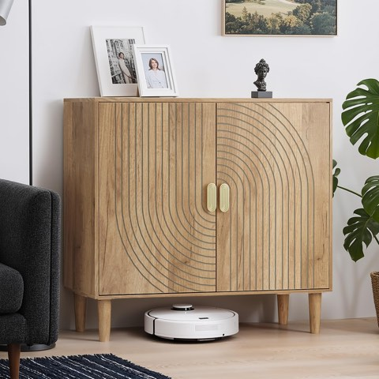
Smuxee Oak Sideboard Cabinet, Freestanding Buffet with Line Groove Design
Shop on Amazon
Building the Look Without Overspending
A single genuine vintage piece, paired with well-chosen reproductions for the rest of the room, captures most of the style's credibility without requiring an entirely vintage-furnished room.
This balanced approach is more financially realistic than treating every piece as a required investment purchase.


The Palette That Signals Authenticity
Warm neutrals, deep wood tones, and the occasional considered pop color read as more credibly mid-century than a palette borrowed from a different, more contemporary style.
This consistency between color and furniture choice is part of what separates a room that genuinely reads as mid-century from one that's just using the label loosely.

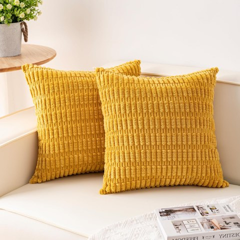
Aegero Corduroy Decorative Throw Pillow Covers, Pack of 2, 18 x 18 Inch, Yellow
Shop on Amazon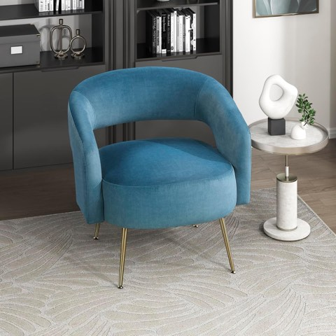
Lexicon Mid-Century Modern Velvet Accent Chair with Open Back, Dark Teal
Shop on AmazonStyling That Reinforces the Investment
Layering texture around a genuine piece, rather than clutter competing with it, keeps the room's actual investment pieces visually prioritized.
This is where styling choices either support or undercut the furniture's inherent value, a cluttered room buries a good piece; a considered one showcases it.
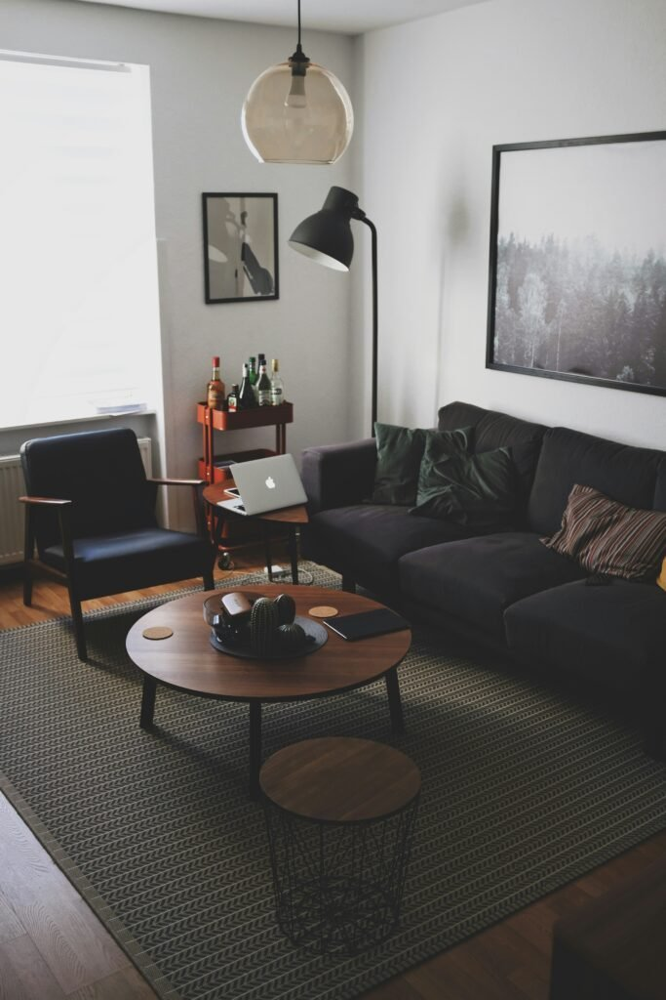
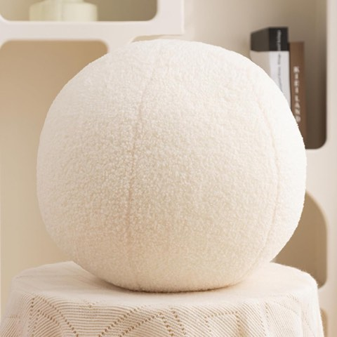
Boucle Ball Pillow, Round Sphere Decorative Throw Pillow, 11.8 Inch, White
Shop on AmazonFurniture as a Genuine Investment
Real vintage mid-century furniture, unlike most furniture categories, can actually hold or increase in value over time, a genuinely unusual quality for home decor.
A well-chosen vintage piece functions as both a styling decision and a reasonable financial one, which isn't true of most "value-adding" decor advice.

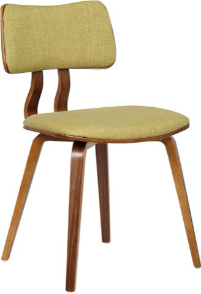
Armen Living Jaguar Mid-Century Dining Chair, Walnut Wood and Green Fabric
Shop on Amazon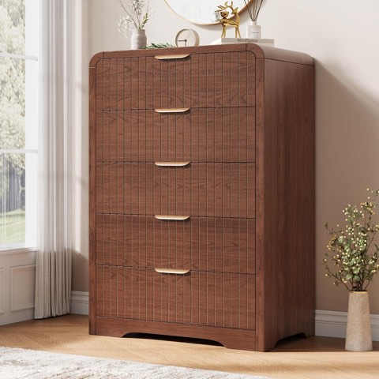
Jocoevol Fluted 5-Drawer Dresser, 43 Inch Tall, Curved Profile Design, Wood
Shop on AmazonMistakes That Undercut the Appeal
Mixing in pieces that are only loosely mid-century-adjacent, without any of the style's actual design logic, is the most common way a room fails to read as genuinely the style.
Overcrowding the room with too many statement pieces at once is the second most common mistake, undermining the restraint the style depends on.

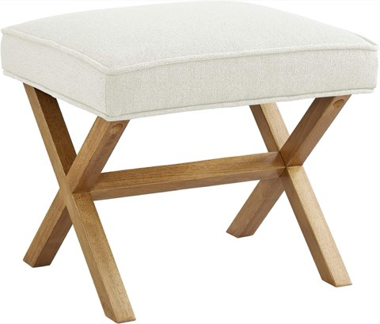
Amazon Basics Small Ottoman Foot Rest, Mid-Century Modern X-Frame, Linen
Shop on AmazonThe Core Elements Worth Getting Right
A genuinely well-proportioned sofa, real wood tones, and a considered color palette do more for the room's credibility than any single statement piece.
These fundamentals matter more than trend-chasing accents, since they're what a buyer, or anyone walking into the room, registers first, even subconsciously.

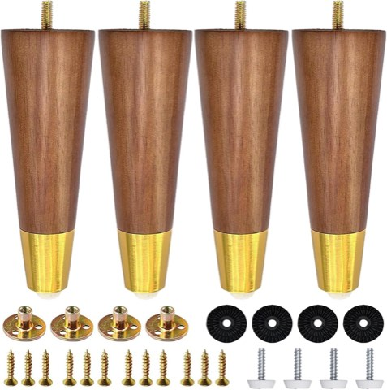
Hardwood Furniture Legs with Gold Caps, 6 Inch, Mid-Century Modern Replacement Legs
Shop on Amazon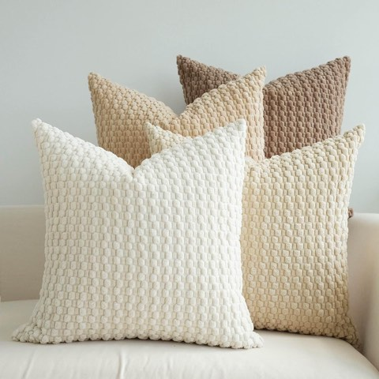
JOJUSIS Throw Pillow Covers, Pack of 4, Cream and Chocolate, 18 x 18 Inch
Shop on AmazonWhy This Specific Style Appeals to Buyers
Mid-century reads as both nostalgic and genuinely current at once, which gives it broader cross-generational appeal than more niche or purely trend-driven styles.
It also photographs exceptionally well for listings, since its clean lines and warm tones translate clearly even in small, low-quality photos.

Smuxee Oak Sideboard Cabinet, Freestanding Buffet with Line Groove Design
Shop on AmazonYaheetech Mid-Century Accent Chairs, Set of 2, Light Brown
Shop on AmazonWhat Actually Defines the Style
Clean lines, organic curves, tapered legs, and a clear function-first philosophy are the non-negotiables, without these, a room reading as "retro" isn't actually mid-century.
This distinction matters more for buyer appeal than it might seem, since a room that misses these fundamentals reads as a costume rather than a genuine style commitment.

Solid Wood Replacement Furniture Sofa Legs, 6 Inch, Set of 4, Heavy Duty
Shop on AmazonWhite Ceramic Vase, Organic Sculpted Shape, Rustic Decorative Centerpiece
Shop on Amazon
Solid Wood Replacement Furniture Sofa Legs, 6 Inch, Set of 4, Heavy Duty
Shop on AmazonWhite Ceramic Vase, Organic Sculpted Shape, Rustic Decorative Centerpiece
Shop on AmazonWhy the Appeal Holds Up
Mid-century's broad cross-generational pull, combined with real vintage furniture's genuine investment quality, gives it a kind of staying power most decor trends don't have.
Getting the core fundamentals right matters more to that appeal than any single statement piece or accent choice.
Design with those actual fundamentals in mind, not just whatever happens to be currently trending, and the appeal genuinely takes care of itself.